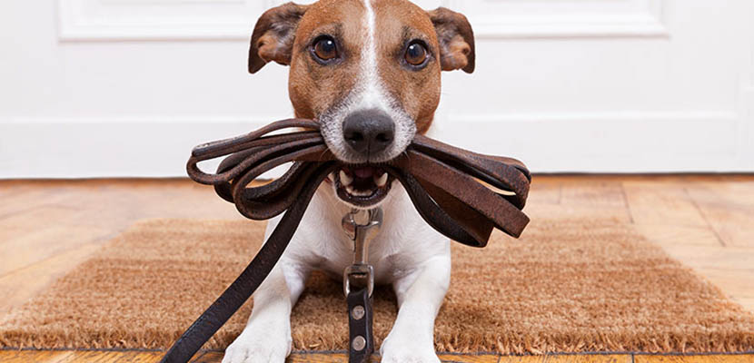
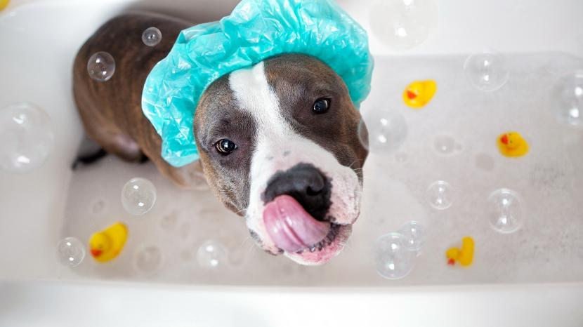

Estos son algunos de los hábitos saludables que deberías tener en cuenta:
Tras la vacuna de la rabia o antirrábica (obligatoria), tu mascota ya estará lista para salir a la calle. Algunos veterinarios indican que a partir de la tercera vacuna el perro ya puede salir, pero que debemos tener mucho cuidado con que no coma nada de la calle ni ningún animal en el parque. Aquí te ofrecemos un ejemplo de horario que puedes seguir.
• 30 minutos de paseo por la mañana.
• 30 minutos a medio día.
• 30 minutos por la noche.
No hay una norma fija. Si se ha ensuciado hay que hacerlo de forma inmediata; y como mantenimiento cada 15 o 60 días. También deende de la raza y el tipo de pelo.

Se debe de cepillar absolutamente a todos los perros, ya que un cepillado frecuente ayuda a quitar la suciedad y los pelos muertos, prevenir los enredos por el pelo largo y ayuda a la distribución de aceites naturales del pelaje. Las épocas en las que se les debe de cepillar más si cabe son en primavera y otoño, puesto que es cuando cambian el pelaje. Por norma general, en función de cada perro se le deberá de cepillar con una determinada frecuencia, los que tienen el pelo más largo necesitan varios cepillados a la semana, mientras que los que tienen el pelo cortito con uno le será suficiente. Hay que ir acostumbrando a nuestro perro desde que es chiquitito a quedarse quieto y que disfrute de este momento, es una inversión de futuro ya que cuando sea mayor estará habituado a ser cepillado y no pondrá resistencia, todo lo contrario. Para cepillar a los perros de pelo largo es mejor un cepillo con cerdas más largas o de alambres curvos, en cambio si el perro tiene el pelo corto las cerdas como es normal deben de ser más cortas. La forma más habitual de cepillarlos es empezando por la cabeza y terminando por la cola.